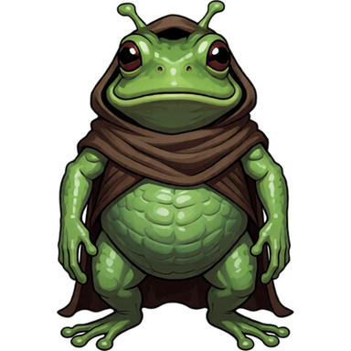

blorbarium
Not connected
Open this page in Chrome on Android to talk to grungo.
This browser can't use Bluetooth. iPhone browsers and Firefox don't support it yet.

grungo
Choose a dish (pretend)
Update
- Get ready
- Press the button
- Send
- Restart
- Check
Checking for updates…
How he feels
Genome
- Genome hash
- …
- Genes
- …
- Dish hash
- …
- Firmware
- …
Show every gene
Adopt
This egg is waiting for its keeper. It starts to hatch once you adopt it.
Name
Up to 15 letters, numbers, - or _.
grungo speaks!
Up to 56 characters. He shows it on his screen.
Teach him a line
Up to 30 characters. He keeps the last 4 and says them now and then, even after your phone has gone.